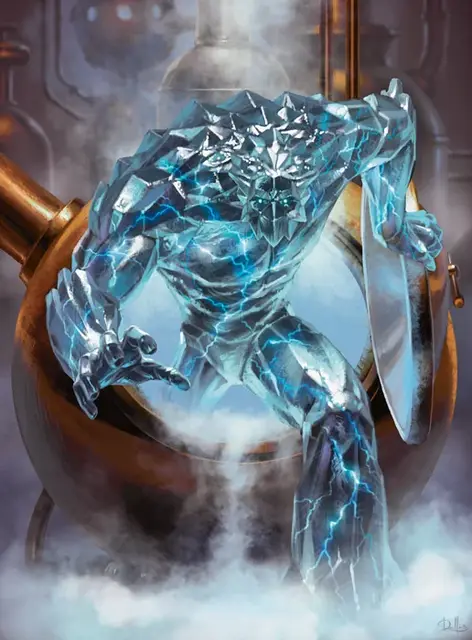

Гальваническая аномалия
Galvanice Weird
Средний Элементаль, хаотично-нейтральный

Класс Доспеха 12 (природный доспех)
Хиты 22 (3к8 + 9)
Скорость 30 футов
| мод | спас | ||
|---|---|---|---|
| СИЛ | 14 | +2 | +2 |
| ЛОВ | 10 | +0 | +0 |
| ТЕЛ | 17 | +3 | +3 |
| мод | спас | ||
|---|---|---|---|
| ИНТ | 3 | −4 | −4 |
| МДР | 10 | +0 | +0 |
| ХАР | 5 | −3 | −3 |
Сопротивление урону холод, электричество; дробящий, колющий, рубящий от немагических атак
Иммунитет к урону яд
Иммунитет к состояниям окаменение, опутанность, отравление, сбивание с ног, захват, паралич, истощение, бессознательность
Чувства тёмное зрение 60 футов, пассивное Восприятие 10
Опасность 1 (200 опыта)
Бонус мастерства +2
Особенности
Предсмертная вспышка. Когда гальваническая аномалия умирает, она разрывается во всплеске льда и молнии. Каждое существо в пределах 10 футов от взрывающейся аномалии должно совершить спасбросок Ловкости Сл 13, получая 7 (2к6) урона электричеством при провале или вдвое меньше урона при успехе.
Действия
Удар. Рукопашная атака оружием: +4 к попаданию, досягаемость 5 футов, одна цель. Попадание: Дробящий урон 5 (1к6 + 2) плюс урон электричеством 5 (2к4). Если целью является существо, оно должно преуспеть в спасброске Телосложения Сл 13 или потеряет способность совершать реакции до начала следующего хода аномалии.
Описание
Гальванические анамалии кажутся воплощением весьма странных технологий. В действительности, они охотно, служат охранниками и чернорабочими в мастерских Иззетов. Они сочетают в себе твердое тело элементального льда с ядром внутри в виде шаровой молнии, которая их оживила. Если гальваническая аномалия уничтожена, лед раскалывается и наружу вылетает опасная шаровая молния. Не смотря на это большинство исследователей Иззет считают, что полезность гальванических аномалий перевешивает этот риск.
Аномалии иззет
Аномалии - это продукты экспериментов Лиги Иззетов, направленные на объединение двух противоположных типов элементалей в надежде создать элементалей, которые были бы более стабильными, чем обычно, и более легкими для контроля. Как это обычно бывает с экспериментами Иззетов, результат оказался прямо противоположным. Аномалии еще более дикие и непредсказуемые, чем любой элементаль. Однако, они могут стать мощными существами-хранителями, и их можно заставить сражаться от имени своего создателя.
Элементарная природа. Аномалии Иззетов не нужен воздух, еда, питье или сон.